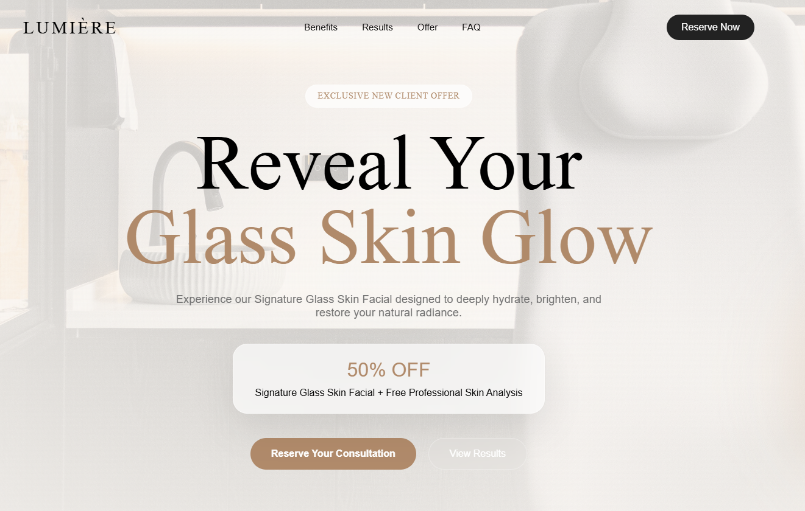
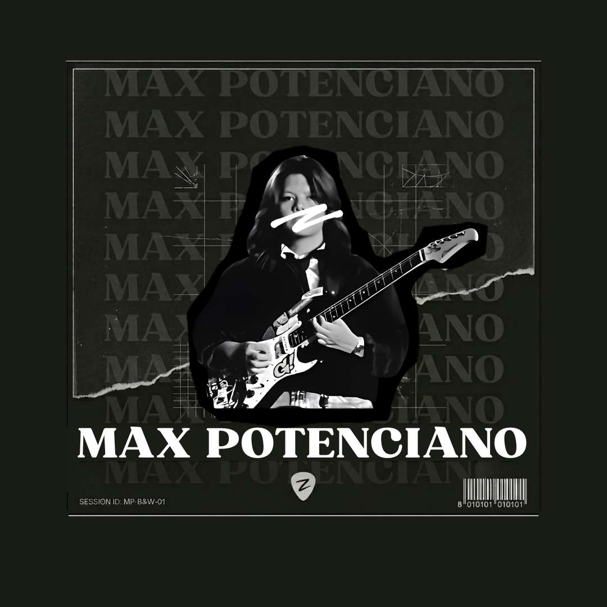
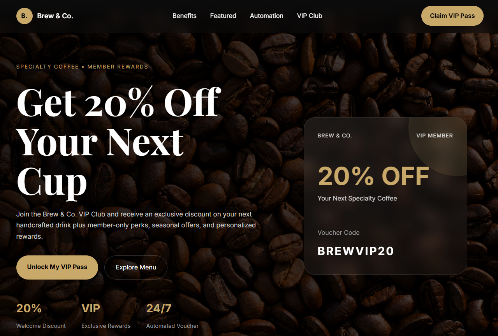
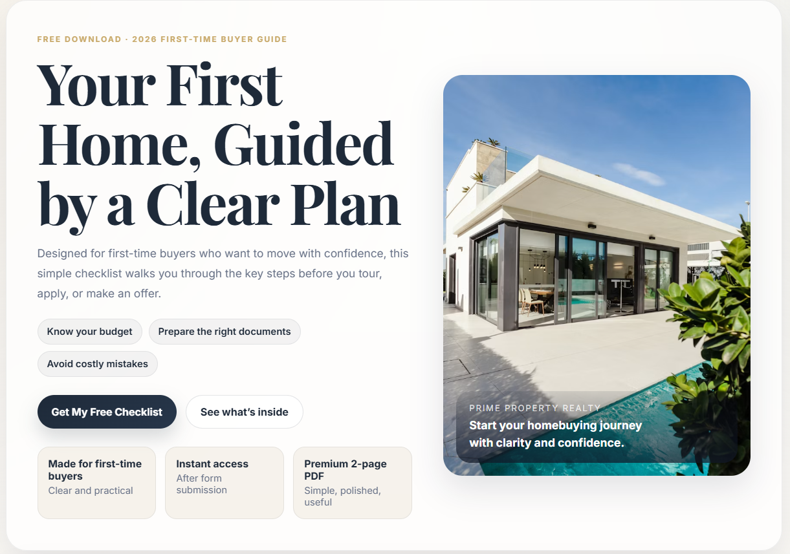

Lumiere MedSpa
Luxury MedSpa landing page built to generate consultation bookings through a high-converting funnel experience.
From building modern websites to designing social media feeds. I handle the web, the grid, and everything in between to make brands stand out online.

I'm a Virtual Assistant and Web Designer who enjoys helping businesses simplify their operations and strengthen their online presence. From website creation and social media management to content creation and automation, I provide the support businesses need to stay focused on growth.
I believe that great digital experiences come from combining creativity, organization, and strategy. Whether it's building a landing page, managing content, or streamlining workflows, my goal is to create solutions that are both effective and easy to use.
Outside of client work, I'm constantly improving my skills, exploring new technologies, and finding better ways to help businesses generate qualified leads and strengthen their digital presence.

Luxury MedSpa landing page built to generate consultation bookings through a high-converting funnel experience.

Lead generation funnel designed to capture customer information, distribute VIP vouchers, and increase repeat visits.

Modern real estate landing page focused on showcasing listings, collecting inquiries, and generating qualified leads.
Need more leads, better systems, or a stronger online presence? I've got room on the light table.
Start a Project →